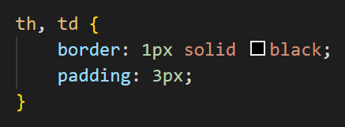
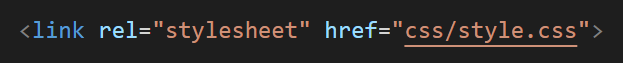
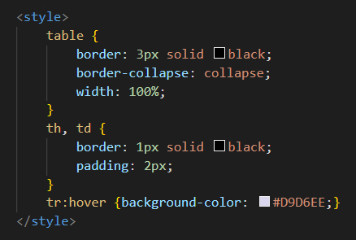
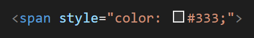

CSS (Cascading Style Sheets) é uma linguagem de marcação que permite a estilização de páginas da web. Com esse recurso, é possível customizar as cores, fontes, entre outros elementos de um site. A implementação do CSS é possível através de diferentes formas, como inline, internamente ou externamente.
O uso do CSS externo permite a aplicação de estilos em diferentes páginas utilizando um só arquivo CSS. Ao editar o arquivo, as mudanças são refletidas em todas as páginas vinculadas.
Para vincular uma página a um arquivo CSS, basta utilizar o elemento "<link>" na seção <head> do documento HTML, indicar a relação como "stylesheet" e referenciar o caminho até o arquivo, como mostra a imagem abaixo:
Estilos internos são úteis quando há a necessidade de substituir alguma regra específica de um estilo externo, estes devem ser definidos dentro da tag "<style>" na seção <head> de um documento HTML.
CSS Inline é o método de implementação onde o atributo 'style' é aplicado diretamente em um elemento HTML. Pode ser utilizado para aplicar estilos em um elemento que é utilizado uma única vez em uma página, no entanto, os estilos inline podem tornar o código HTML mais difícil de ler e manter, então geralmente é melhor usá-los com moderação. O CSS Inline tem maior prioridade comparado aos outros métodos, e sobrepõe outros estilos caso haja conflito.
